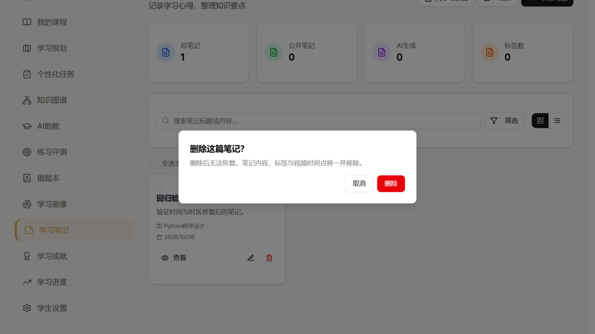
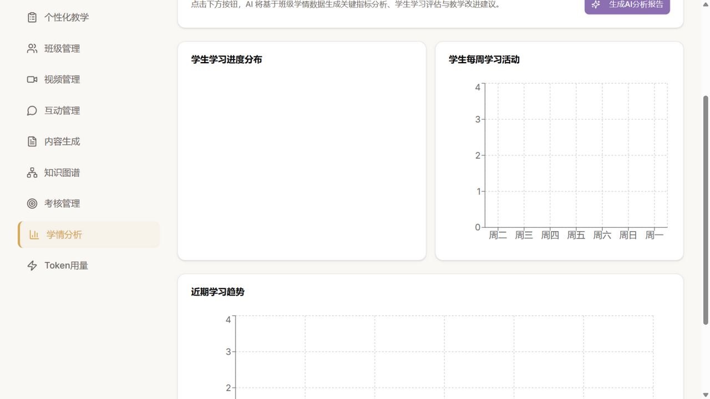
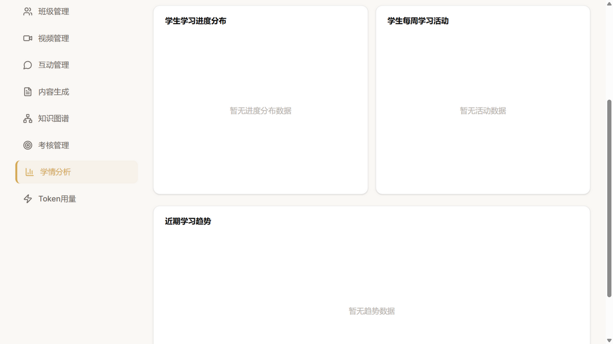

night · 报告 docs/night-run/night-report-20261006.html · 执行窗口 02:21 – 04:40（约 2.2 小时）· 无人值守全程自主决策以真实用户身份走完了学生端 / 教师端 / 管理员端全旅程，发现 12 项问题，其中最严重的是 AI 助教回复不渲染 Markdown 和 两个仪表盘在无数据时用编造数字顶替（数据诚信问题）；连同上轮夜巡遗留的 3 项前端缺陷与守卫测试欠账，今夜共落成 10 个 commit，全部经浏览器复现验证与 420 条自动化用例回归，全程零新增依赖、未触碰架构冻结红线（密钥 / schema / API 契约），仓库最终处于干净且全绿的状态。
以「从没见过这个项目」的姿态归零行走：落地页 → 登录（含错误密码边缘路径）→ 学生端 13 个模块 → 教师端 12 个模块 → 管理员端 10 个模块 → 移动端视口与越权 URL 直达。证据截图均在 docs/screenshots/night-run/。
| 编号 | 级别 | 现象 | 当前状态 |
|---|---|---|---|
| J-01 | 一般 | 学生仪表盘「最近活动」与管理员「创建时间」直接显示 2026-09-19T13:26:00.997430 原始 ISO 串 | 已修复 58eff04 |
| J-02 | 严重 | AI 助教答疑回复不渲染 Markdown，**粗体** / ##标题## / 行内 #### 记号裸露（README 宣称支持 Markdown） | 已修复 adcba1b |
| J-03 | 一般 | 画像「维度详情」兴趣领域显示孤立逗号 ,（area 为空白的占位条目 join 所致） | 已修复 a67f290 |
| J-04 | 一般 | 同一页面「学习节奏」两处取值矛盾：特征层=偏慢，维度详情=深度型（同一原始值 slow 两套译名） | 已修复 66b590b |
| J-05 | 建议 | 画像页「成绩趋势」恒为 0，与「平均成绩 63.9」口径不同且无解释（考核分 vs 练习均分） | 转方案 待决策 |
| J-06 | 一般 | 新建笔记日期显示 2026/10/05，而本地已是 10/06 凌晨 —— UTC+8 用户全局慢 8 小时 | 已修复 58eff04 |
| J-07 | 一般 | 删除笔记用浏览器原生 confirm()：风格割裂且会阻塞 Jest / 浏览器自动化 | 已修复 f91e6f2（其余页面见方案区） |
| J-08 | 一般 | 学习进度页图表空数据只有坐标系无提示；全零数据画出「看不见的空图」 | 已修复 e732e34 |
| J-09 | 严重 | 教师学情分析「学生学习进度分布」饼图完全空白；深挖发现前端在接口无数据/报错/首帧时用硬编码假数据顶替（假进度分布、假周活动、假趋势），教师会把编造数字当真实学情 | 已修复 e732e34 |
| J-10 | 建议 | 品牌混乱：应用内自称「EduAI Pro」，项目名/README 为「智教星 ZhijiaoXing」；「Spark4.0 Ultra」与实际配置 ultra 不符；落地页演示数据为高中数学但项目定位高等教育 | 待决策 产品方向 |
| J-11 | 建议 | 考核管理列表出现两行完全相同的「机器学习基础」考试 —— 需确认是否允许重名创建 | 待确认 |
| J-12 | 建议 | 班级管理统计卡使用高饱和渐变（蓝绿橙紫），与全站极简白卡语言不统一 | 转方案 见 V-01 |
#/teacher 被正确弹回）、错误提示、移动端自适应（375px 无横向溢出）、错题本 CRUD、SSE 真实流式回复、3D 图谱渲染 —— 主干路径全部健壮。每项修复都执行了「重走复现步骤」验证；风险分级全部为低风险直接落地，未触发回滚。
根因：MessageBubble 直接输出纯文本；且星火模型常把 #### 记号当行内分隔符（前后无换行），纯行级解析覆盖不了。修复：新增零依赖 utils/markdownLite.jsx（仿 CourseLearningPage 既有内联渲染器，不用 dangerouslySetInnerHTML），支持标题/粗体/行内代码/列表/围栏代码块/引用 + 消费式行内 ##~#### 处理。
验证：11 条单元用例（含流式残缺语法、C# 不误伤）+ 真实浏览器 SSE 提问复验。
根因：后端 datetime.utcnow()（裸 UTC）+ isoformat()（无时区标记），前端 new Date() 按本地时区解析 —— UTC+8 全局慢 8 小时。修复：新增 utils/apiDate.js（无时区标记的串追加 Z 按 UTC 解析），替换 4 处展示点；后端契约修正需人工批准，今夜不动 API。
验证：7 条单元用例（含微秒精度、跨日进位）+ 浏览器复验「2026/9/19 21:26:00」（13:26Z + 8h ✓）与笔记日期 2026/10/06 ✓。
aria-label + htmlFor label；role="status"、时间戳 Badge 改为真按钮。验证：Search 34/34、MistakeBook 30/30、StudyNotes 31/31（旧测试中「断言无名按钮」的用例同步改为断言可访问名）。
tests/test_route_guards.py）：遍历 url_map 全部允许 GET 的 /api/* 路由（约 180 条），逐一断言未认证访问必须 JSON 且不得 200/HTML，违规聚合点名。首跑即全过 —— 现有守卫纪律良好，价值在锁死基线防新路由回归。
删除学生端与教师端全部「模拟数据」回退（含首帧预填的假数据），空/全零一律走既有的「暂无数据」空态。


围绕四大方向定向调研（star 数与活跃度均经 GitHub API 核实）。处置原则：新增运行时依赖需人工批准，故「嵌入」仅限 devDependency 或零依赖仿制。
| 仓库 | 它做了什么 / 可能如何用 | 成本 | 结论 |
|---|---|---|---|
| eslint-plugin-jsx-a11y (~3.6k★, MIT) | 静态扫 JSX 无障碍问题，与现有 ESLint 9 flat config 直接兼容；把 a11y 从抽查变 CI 拦截 | 低（devDep） | 建议嵌入 需批准 devDep |
| eslint-plugin-react-hooks v6 (随 React) | v6 并入编译器规则（set-state-in-render/effect 等），正是防抖泄漏这类问题的静态防线；本项目已有 v5 仅需升级 | 低（devDep 升级） | 建议嵌入 |
| vercel/chatbot (~21k★, Apache-2.0) | 流式聊天 UI 三件套：块级 memo 流式 Markdown、未闭合块优雅降级、stick-to-bottom 智能滚动；可零依赖仿制 | 低（纯参照） | 仿制 今夜 markdownLite 已走第一步 |
| vercel/streamdown (~5.7k★) | 流式 Markdown 天花板方案（CJK 优化对症中文教育产品），但引入 Shiki/KaTeX 依赖树 | 中~高 | 仅方案 |
| webargs (~1.4k★) / flask-pydantic (~440★) | Flask 声明式入参校验（422 错误契约），根治 type=int 静默 None；不批依赖则仿其 flaskparser 的错误契约自研轻量装饰器（~150 行） | 中 / 低（自研） | 仅方案 → 可仿制 |
| GOV.UK notifications-admin / roxy-wi | 蓝图级 url_map 全遍历守卫测试 + is_json 断言范式 —— 今夜已按此仿制落地（test_route_guards.py） | 低 | 已仿制落地 |
| Airflow pyproject / pandas | pytest filterwarnings 的「消息正则+模块」精准写法与严格模式范式 —— 今夜已仿制落地（pytest.ini） | 低 | 已仿制落地 |
| Who&When 失败归因数据集 (~390★, ICML'25) | mistake_agent/mistake_step/mistake_reason 三字段归因模型，可映射为 agent_run/agent_step 表 + 埋点；配合 R-3 失败归因方向 | 低（建表+埋点） | 仅方案 建表需批准 |
| TypeWords (~10k★, GPL-3.0) | 错题本交互蓝本：四阶练习流（跟打→听写→自测→默写）+ 记忆曲线排程；严禁抄码，仅取流程思想 | 低（零接触代码） | 仿制（仅交互） |
| ts-fsrs (~0.8k★, MIT) | FSRS-6 间隔重复算法，错题本「何时复习」的科学调度；MIT 纯函数，是最值得真嵌入的运行时库 | 低（需批准） | 仅方案 |
| @axe-core/react (~0.7k★, MPL-2.0) | 运行时 a11y 违规探测（dev 模式），补静态 lint 抓不到的对比度/焦点问题 | 低（devDep） | 建议嵌入 |
今夜决策：不开新坑。理由 —— 缺陷修复预算已被旅程发现占满（10 个 commit），且 R-5/R-7 这类「防静默失效」基础设施的杠杆高于任何新功能原型；新坑立项必须当夜能形成可演示成果，勉强开坑只会留下半成品。
| 检查项 | 结果 | 说明 |
|---|---|---|
| 前端单元测试 (jest) | 26 套件 246/246 通过 | 含今夜新增 markdownLite 11 条 + apiDate 7 条 |
| 前端生产构建 (vite build) | 成功 12.93s | verify_all.ps1 一键验证通过 |
| 后端测试 (pytest) | 173 通过 / 1 跳过 | 较上轮 +6（守卫测试）；测试输出告警噪声已收敛 |
| 回归自检 | 通过 | 浏览器重走主干旅程：笔记 CRUD（新日期/新确认框）、画像两处取值、进度/学情空态、时间格式逐项复验 |
| Diff 自审 | 通过 | 20 文件 +716/−224，无调试残留、无越权改动、无格式噪音混入 |
| 仓库最终状态 | 干净 · 全绿 | 工作区除本报告与既有的提示词文档外无未跟踪文件 |
视觉审查由值守 agent 亲自执行（外部视觉模型供应商今夜不可用，按预案降级为自审；13 张关键页面截图逐一核对，覆盖默认/空/错误/成功反馈/移动端视口五种状态；加载态因转瞬即逝未单独取证）。
| 编号 | 级别 | 结论 | 处置 |
|---|---|---|---|
| V-01 | 一般 | 班级管理统计卡用高饱和渐变（蓝绿橙紫），与全站极简白卡语言不一致（对应 J-12） | 待决策 涉及设计语言取舍，不擅自重设计 |
| V-02 | 建议 | 三端主题色不统一：教师/学生端金色高亮，管理员端蓝色高亮（用户管理侧边栏/按钮） | 待决策 若是有意的角色主题则保留 |
| V-03 | 建议 | 学情分析「生成AI分析报告」按钮在某些滚动位置被卡片边缘裁切（截图见 J-teacher-analytics.png 右上角） | 待复核 与滚动位置相关，建议白天确认 |
| — | pass | 其余 10 页（落地页/登录错误态/学生仪表盘/3D图谱/答疑/错题本/复习会话/智能体监控/移动端/学情空态）状态合理性与审美主流度均通过 | — |
| # | 事项 | 风险 / 背景 | 建议 |
|---|---|---|---|
| D-1 | /api/search/* 未认证公开 | autocomplete/suggestions/recommendations/related 四条路由未登录可访问（旅程实测），暴露课程/知识库联想数据；今夜守卫测试按现状豁免并加测试锁定 | 产品决策：向未登录用户开放搜索联想是否有意？若否，加 login_required 一行即可 |
| D-2 | 后端时间契约 | 19+ 模型用 datetime.utcnow() 裸 UTC + isoformat 无时区标记，前端已用 apiDate 兜住，但任何绕过 apiDate 的新消费点都会复发 | 批准后端改造（timezone-aware 或统一输出带 Z），配套迁移说明 |
| D-3 | 品牌统一（J-10） | EduAI Pro vs 智教星 ZhijiaoXing；「Spark4.0 Ultra」宣传与实际配置不符；学段定位（高中演示数据 vs 高教定位） | 若冲刺答辩，建议统一为「智教星」并改口模型表述 |
| D-4 | 考核允许重名？（J-11） | 列表出现两行完全相同的考试 | 确认产品预期；如需唯一性，后端加校验 |
| D-5 | R-6 Web Push / R-8 密钥治理 | 沿用上两轮冻结结论：涉及 schema 变更与密钥轮换，顺序不可调换 | 维持冻结，需人工批准后排期 |
| D-6 | devDependency 引入 | eslint-plugin-jsx-a11y、@axe-core/react、react-hooks v6 升级（三项均为纯开发期工具，零运行时影响） | 批准后一个 PR 内接入并出首轮 a11y 清单 |
| commit | 类型 | 主题 |
|---|---|---|
| adcba1b | fix | AI 助教 Markdown 渲染（J-02） |
| 58eff04 | fix | 裸 UTC 时间串（J-01/J-06） |
| 3cb28cc | fix | SearchBar 防抖清理（R2-DEF-001） |
| 1fbe427 | fix | 错题本筛选器可访问名（R2-DEF-002） |
| b5a6a2f | fix | 视频笔记无障碍三件（R2-DEF-003） |
| 66f0a4a | test | 参数化路由守卫测试 + pytest 降噪（R-5/R-7） |
| a67f290 | fix | 兴趣领域孤立逗号（J-03） |
| e732e34 | fix | 仪表盘假数据回退移除（J-08/J-09） |
| f91e6f2 | fix | 删除确认 AlertDialog（J-07） |
| 66b590b | fix | 画像维度标签与后端统一（J-04） |
证据截图：docs/screenshots/night-run/（23 张，J- 前缀为旅程取证、FIX- 前缀为修复后复验、V- 前缀为状态态取证）。本轮产出物：本报告 + 截图 + 10 个 commit，均已随 night 分支提交。